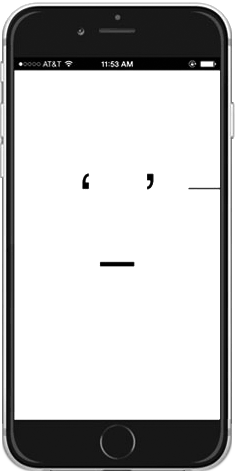

The
iOS version is a javascript
webapp, saved locally and added to your home screen.
Launch Multi. Tap the screen anywhere to stop.
Tap again to start.
Tap and drag on the right side to adjust the speed
(a line appears under your finger — up for faster, down for slower).
Save a particular face by making a screenshot (press the home and sleep/wake buttons together.)
The image appears in your Photos and can be simply txted, emailed, shared, or saved for the future.
The
OS X version is a java-based
Macintosh application.
Launch Multi.* Click anywhere to stop. Click again to start.
(You can also use the spacebar to stop/start.)
Click and drag on the right side to adjust the speed
(a line appears under your mouse — up for faster, down for slower).
Multi on OSX has audio. To toggle on/off, press “a.”
Save a particular face by making a screenshot (press shift-⌘-4 then spacebar and select the Multi window).
The image appears on your desktop and can be simply txted, emailed, shared, or saved for the future.
If you have problems opening Multi on your Macintosh (depending on your
security settings, you may get an error that says
“Multi can't be opened because it is from an unidentified developer.”)
If so, simply hold down the control key (or right-click)
when lauching Multi and choose Open from the menu. A dialog box will appear,
click OK.